1e Kerstdag, vrijdag 25 december
KerstBrunch
11:00 – 14:00 uur
- Volwassenen51,50
- Kinderen 4 t/m 11 jaar24,50
- Kinderen 0 t/m 3 jaargratis
Volledig volgeboekt
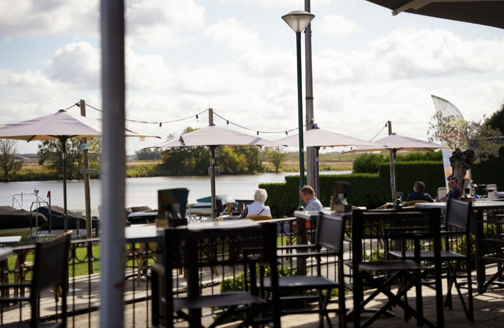
Nu in winterstop
…en mogen wij u met ons hele team weer verwelkomen! Met de Kerstdagen zijn we wel open: bekijk Kerst 2026.
De Watervogel is een seizoensrestaurant. Hoe hoger het water op de peilschaal, hoe meer dagen we open zijn. Tik op een maand voor de details.
Maart 2027
Alleen 27, 28 en 29 maart
Het eerste weekend van het nieuwe seizoen.
| Januari | GeslotenUitgezonderd grote feesten. |
|---|---|
| Februari | GeslotenUitgezonderd grote feesten. |
| Maart | Alleen 27, 28 en 29 maartHet eerste weekend van het nieuwe seizoen. |
| April | Open vanaf 11:00 uurMaandag en dinsdag gesloten. Koningsdag 27 april open, 29 april gesloten. |
| Mei | Open vanaf 11:00 uurMaandag en dinsdag gesloten. 2e Pinksterdag 17 mei open, 19 mei gesloten. |
| Juni | Open vanaf 11:00 uurMaandag en dinsdag gesloten. |
| Juli | Open vanaf 11:00 uurAlleen dinsdag gesloten. |
| Augustus | Open vanaf 11:00 uurAlleen dinsdag gesloten. |
| September | Open vanaf 11:00 uurMaandag en dinsdag gesloten. |
| Oktober | Alleen zaterdag en zondag, vanaf 11:00 uur23 en 24 oktober is de laatste weekendopening van het seizoen. |
| November | GeslotenUitgezonderd grote feesten. |
| December | Gesloten, behalve met KerstUitgezonderd grote feesten. 25 december Kerstbrunch 11:00–14:00 uur en Kerst DinerBuffet 17:00–22:00 uur; 26 december Kerstbrunch 11:00–14:00 uur. |
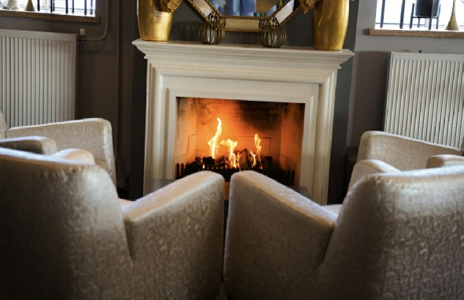
In december zijn we gesloten, maar met de Kerstdagen staat de deur open. Reserveren gaat telefonisch via 0478 63 63 40.
1e Kerstdag, vrijdag 25 december
11:00 – 14:00 uur
Volledig volgeboekt
1e Kerstdag, vrijdag 25 december
17:00 – 22:00 uur
2e Kerstdag, zaterdag 26 december
11:00 – 14:00 uur
Prijzen in euro’s. Ook met Kerst 2027 zijn we open: 25 december Kerstbrunch en Kerst DinerBuffet, 26 december Kerstbrunch.
Het is echt genieten bij ons aan de Maas. Veeg door de foto’s.
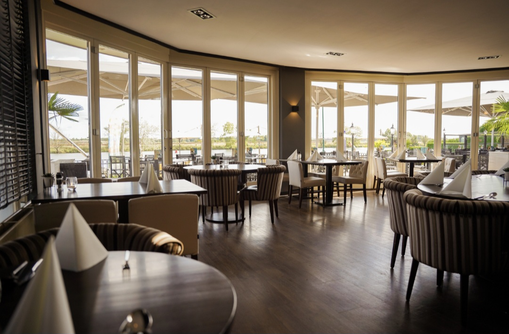
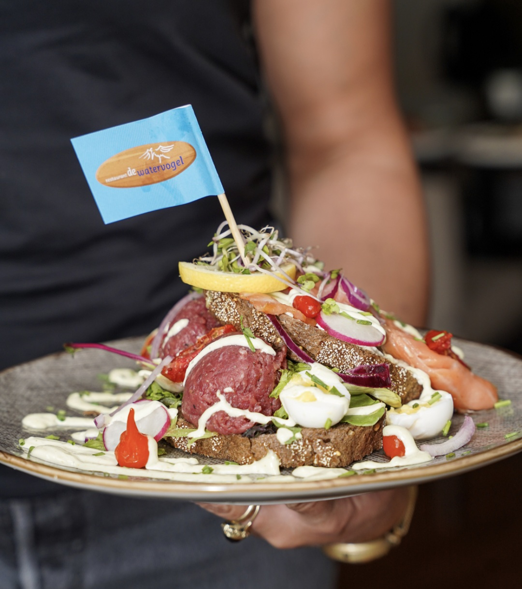
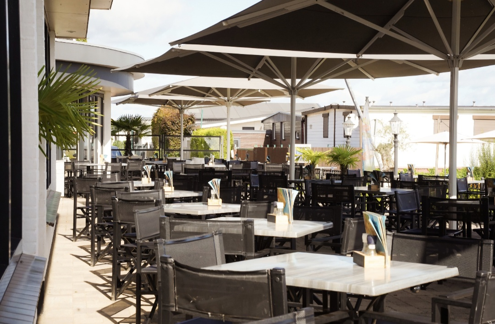
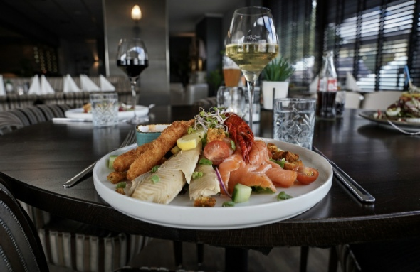
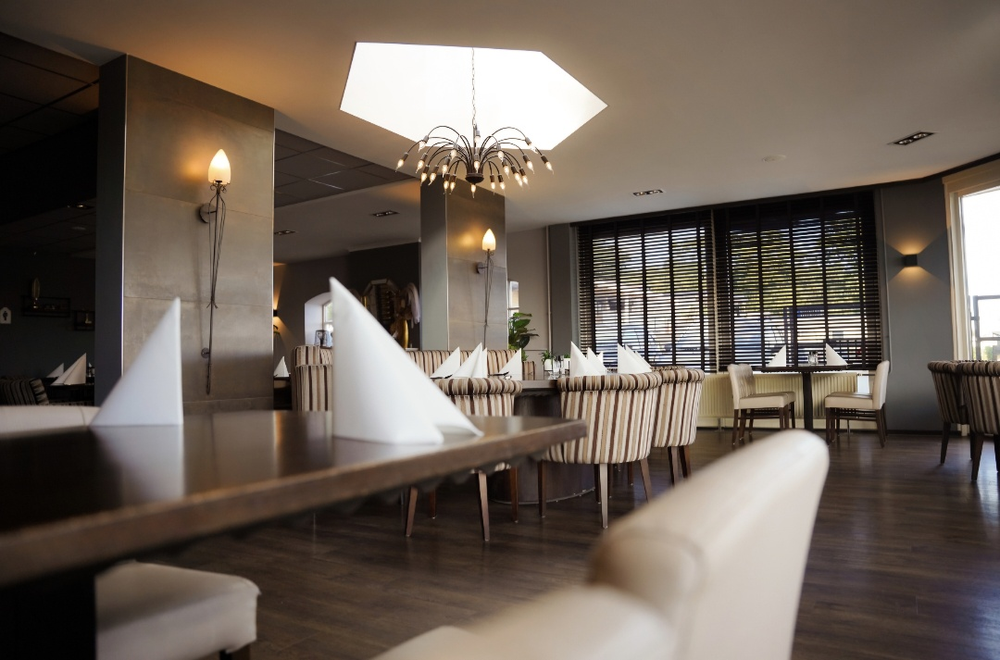
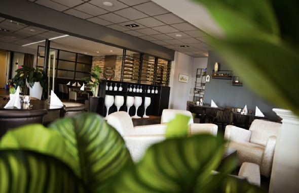
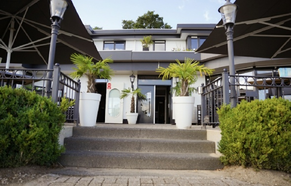
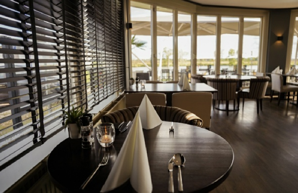
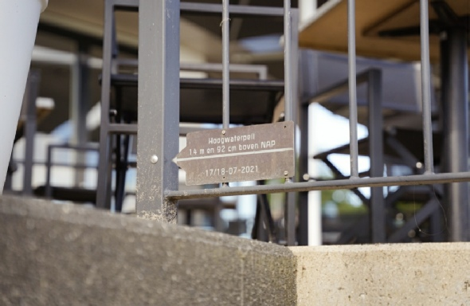
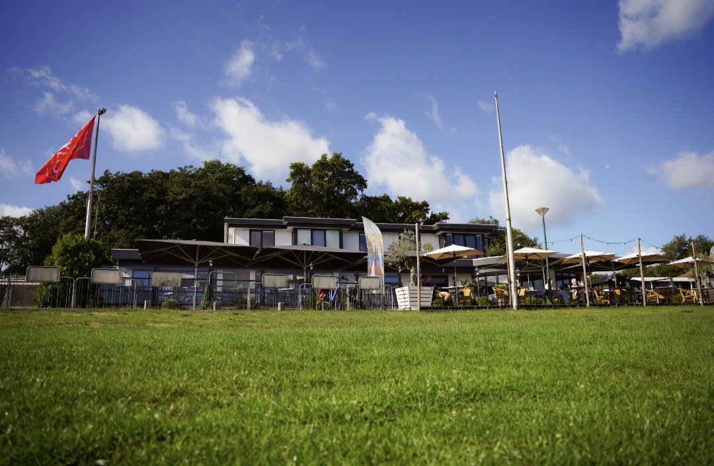
Uw tafel wordt vergeven als u niet binnen 15 minuten na de reserveringstijd aanwezig bent.
De drinkbakjes staan klaar!
Contant, pin, Mastercard en Visa.
Twins Lunch & Diner, ook van ons.
0478 63 63 40 info@restaurantdewatervogel.nl Facebook
Route plannen